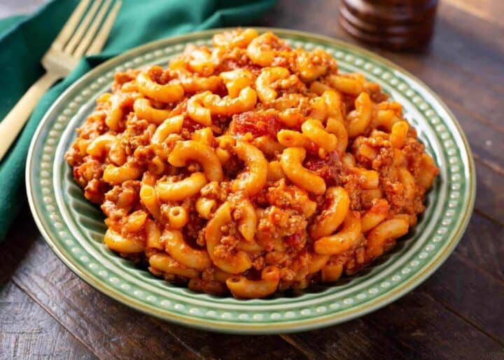

Old Fashioned Goulash

How to make Old Fashioned Goulash
Old Fashioned Goulash is a deliciously simple recipe with ground beef,
tomatoes, and macaroni. You may have eaten this retro Goulash recipe as a
kid.
Ingredients
- 2 Tablespoons Olive Oil
- 2 lbs Lean Ground Beef or Ground Turkey
- 1 large Yellow Onion, diced
- 3 large cloves Garlic, pressed or finely minced
- 2 large Bay Leaves
-
1 cup Low Sodium Beef Broth* (chicken broth if using ground turkey)
- 2 - 14.5-ounce cans Diced Tomatoes with juice, or stewed tomatoes
- 2 - 15-ounce cans Tomato Sauce
- 2 teaspoons Low Sodium Soy Sauce (or Worcestershire sauce)
- 2 teaspoons Seasoned Salt (such as Johnny's®)
- 1 teaspoon Black Pepper
- 2 teaspoons Italian Seasoning
- 1 Tablespoon Paprika
- 2 cups Uncooked Small Elbow Macaroni
Steps
-
Heat a dutch oven or soup pot on med-high heat. When it is hot, add the
oil, then add the ground beef or turkey. Cook, stirring occasionally,
until browned. About 10 minutes. Spoon off some of the excess fat.
-
Add the diced onion, garlic, and bay leaves. Cook for 4 minutes,
stirring occasionally.
-
Add the broth, diced tomatoes, tomato sauce, soy sauce, seasoned salt,
pepper, Italian seasoning, and paprika. Stir well
-
Reduce the heat to low, cover and cook for 15 minutes, stirring
occasionally.
-
Stir in the macaroni noodles (uncooked), cover and cook for 15-25
minutes, or until pasta is cooked.
- Remove and discard bay leaves, then serve
Home